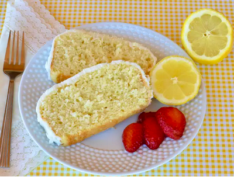

Lemon Pound Cake

Description
A lemony pound cake with the added addition of lemon pudding
for an extra moist taste sensation.
Ingredients
- Flour
- Teaspoon of Salt
- Sugar
- Butter
- 4 Large eggs
- Buttermilk
- Lemon Extract
Steps
- Preheat the oven to 350 degrees F (175 degrees C). Grease and flour a fluted tube pan (such as Bundt).
- Make the cake: Sift flour, salt, and baking soda together in a bowl.
- Beat sugar and butter in a bowl with an electric mixer for 10 minutes. Add eggs, one at a time, beating well after each addition. Add flour mixture in three batches, alternating with buttermilk, beating well after each addition and ending with the flour mixture. Stir in lemon extract. Pour batter into the prepared pan.
- Place into the preheated oven and immediately reduce the oven temperature to 325 degrees F (165 degrees C). Bake until a toothpick inserted into the center of the cake comes out clean, 60 to 75 minutes.
- Remove from the oven and cool in the pan for 10 minutes. Tap the pan firmly a few times, then shake it gently to loosen the cake. Place a wire rack over the pan and invert to release cake onto the rack. Set the rack and cake over a sheet of parchment paper.
- Make the glaze: Beat confectioner's sugar, lemon juice, butter, and lemon zest in a bowl with an electric mixer until smooth.
- Pour about 1/2 of the glaze over the warm cake. Let cool for 20 minutes, then pour remaining glaze over top.